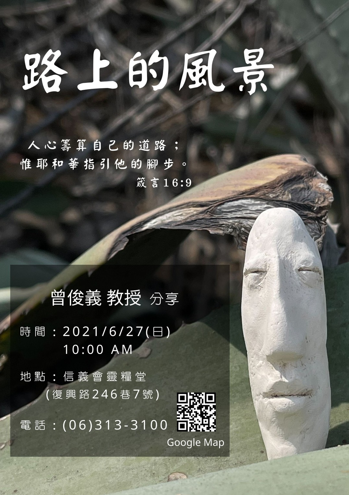

基督教臺灣信義會
靈糧堂 週報

1. 今天6/6(日)聖餐因疫情關係暫停一次。
2. 因疫情關係及台南市政府公告，暫停實體聚會，鼓勵在家用視訊一起敬拜神。若您沒有小組，或收不到網路直播訊息，請加入此網址: https://line.me/R/ti/g/Gqd-jgnuCV 或在手機安裝我的教會APP，加入信義會靈糧堂。
3. 目前因疫情關係，有提供教會匯款或來教會投奉獻箱兩種奉獻方式，願神祝福甘心樂意奉獻之人。
4. 六月份主日講員: 6/6 吳至新牧師、6/13李桃瑩教師、6/20 李允中傳道、6/26 曾俊義教授，願神賜福講員的生命，讓他們的口成為神話語的出口，祝福所有願意聆聽神話語的人。
5. 6/26(日)為福音主日，特邀臺南應用科技大學美術系曾俊義教授分享「路上的風景」，請弟兄姊妹邀請親朋好友來參加。

6. 六十週年紀念衫和紀念冊已到貨並可領取，在教會上班的時間來領取，但要先預約，紀念冊是一家一本。還有，已訂購超過一件紀念衫者，每件需付250元。
7. 目前來教會者，仍需實名制登記。
星期 |
時間 |
聚會名稱 |
|---|---|---|
主日 |
上午10點00分 |
主日崇拜、學青牧區、兒童主日學 |
主日 |
下午12點30分 |
長青小組、以勒小組、約書亞小組、保羅小組 佳美小組、盛愛小組、帝寶小組 |
週三 |
晚上08點00分 |
美女小組 |
週四 |
早上09點30分 |
良善小組 |
週四 |
晚上07點15分 |
喜樂小組 |
週四 |
晚上08點00分 |
凡恩小組 |
週五 |
晚上07點30分 |
牛棚小組、得勝小組、百合小組 |
週五 |
晚上08點00分 |
1+7小組 |